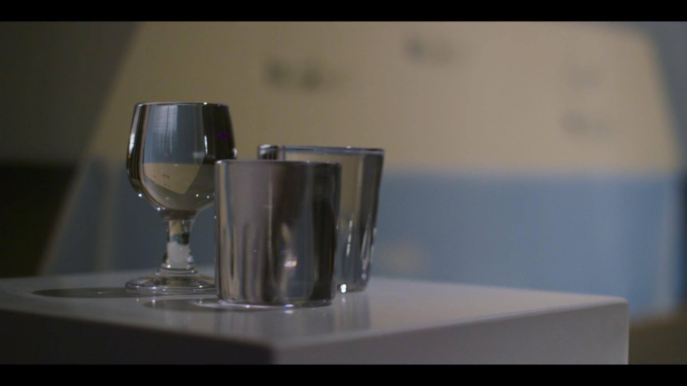
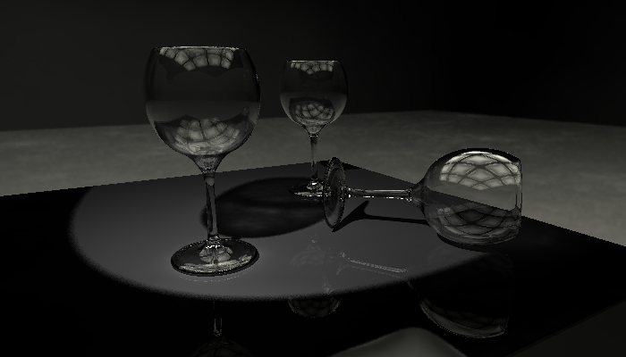
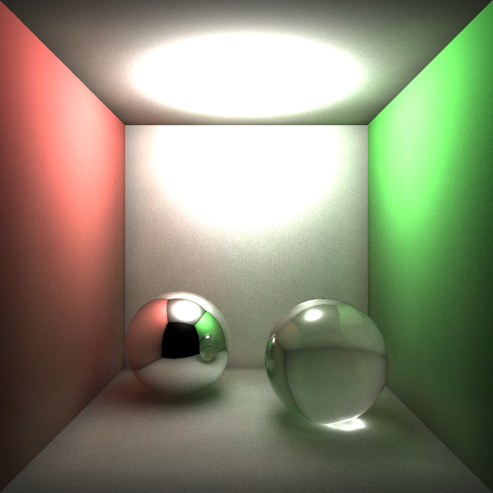
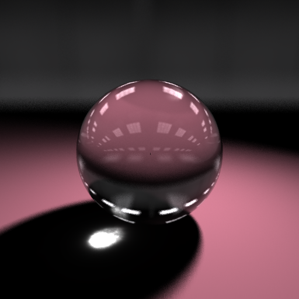

By Evan Carey and Robin Clark
"This assignment involves rendering a realistic image of an object or scene of your own choosing. The scene or object should be challenging enough to require you to design and implement one or more advanced rendering algorithms."
(full description available here)
Our goal was to recreate the following image, a shot captured from the first episode of Chef's Table on Netflix, depicting glass sculptures on a table.
To accurately depict the scene, we simulated global illumination using photon mapping, creating separate maps for global photons and caustic photons. To make realistic-looking glass, we implemented Fresnel reflection. To mimic the blurred background of the shot, we used environment mapping and depth-of-field.
Our final image depicts three wine glasses on a glossy table.
Our scene contains a single spot light, which emits 100,000 global photons and 50,000 caustic photons. Irradiance is estimated from 500 local photons in a radius of 1.0. On contact with a surface, photon behavior is determined using Russian roulette. Photons surviving after eight bounces are automatically terminated. Photon map storage and irradiance estimation was done using Henrik Wann Jensen's 2001 implementation.
We simulated the behavior of glass by using the Phong shading model and the Fresnel equations. Most notably, ray behavior on glass surfaces were determined by calculating the the reflectance for s-polarized light. The transmittance and reflectance of the light varies based on the angle of incidence between the ray and the surface. Implementing this greatly improved the look of the glass in our scene.
To recreate the camera lens blur effect apparent in the reference image, we implemented a depth-of-field technique. Given an aperture radius and a focal distance, for each pixel in the scene, our algorithm randomly creates a ray within the radius of the eye (disc sampling) and traces it through the point at the focal distance. The trace results are averaged to get the final color value of the pixel. This method produces a convincing blur effect for objects that are "not in focus." To create a smooth blurring effect, however, this method requires a large number of samples from the camera. Due to time constraints and its impact on render time, we decided not to include it in our final image. Its effectiveness can be seen in the simple glass ball scene here.
The wine glass and table models are freely available on TurboSquid and duplicated/transformed using Blender. The resulting scene contains 42,292 triangles.
The environment map we used is from "HDRi Pack 1" by DeviantArt user zbyg, and is available for free here. Importing and storing the image was done using FreeImage, an open source library.
We made an effort to work together as much as possible. Tasks often built off each other, so it was difficult to completely seperate responsibilities. Attempting to do so earlier in the quarter resulted in duplicate code or one person unable to work because they had to wait for another part to be done. The code can also be difficult to debug, and we found having two sets of eyes on the code helped catch mistakes more quickly.
For our class presentation, we implemented photon mapping, caustics, and Fresnel reflection to produce the following image. We used this scene primarily for testing, as it shows most of our effects and and renders quickly. It uses 200,000 global photons and 50,000 caustic photon emitted from a sphere light onto a mirror ball and a glass ball.
This scene shows a glass ball on a diffuse surface. It utilizes photon mapping and caustics, but was used to test our environment mapping, which can be seen in the reflection on the ball. Additionally, it uses depth-of-field to focus on the ball and blur out the map and edge of the diffuse surface in the background, as well as a spot light to create soft shadows.
